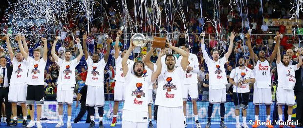
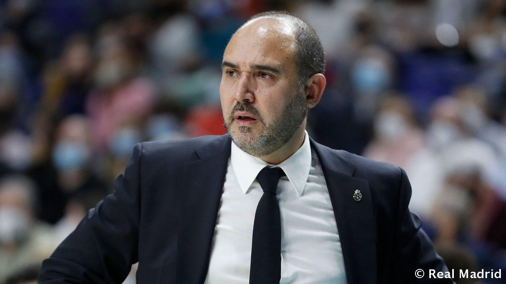
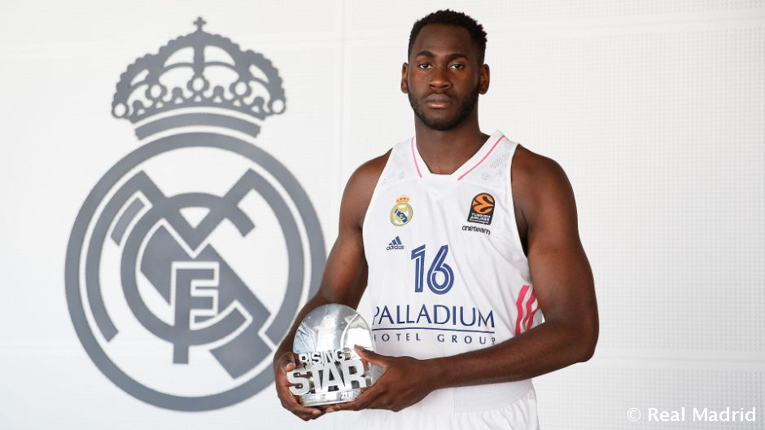

Real Madrid Basketball Wins Championship
That's fantastic news for Real Madrid Basketball! Winning a championship is a remarkable achievement, and it reflects the team's hard work, dedication, and skill on the basketball court. Championships are the culmination of a season's worth of effort, teamwork, and strategic play. It's a moment of glory not just for the players, but also for the fans and the entire organization. Real Madrid Basketball's victory in the championship demonstrates their excellence in the sport and their ability to rise to the occasion when it matters most. Congratulations to the team on this remarkable accomplishment!.

Real Madrid Basketball's Coach Receives Prestigious Coaching Award
The head coach of Real Madrid Basketball has been honored with a prestigious coaching award for their exceptional leadership and strategic prowess. Under their guidance, the team has achieved remarkable success, including recent championship victories. This recognition is well-deserved and highlights the coach's invaluable contribution to the team's achievements.

Real Madrid Basketball's Youth Academy Produces Phenomenal Talent
The Real Madrid Basketball Youth Academy continues to be a hotbed for emerging talent. Several young players have recently made their mark in the basketball world, thanks to the academy's exceptional training programs. Real Madrid's investment in youth development ensures a bright future for the team and the sport itself.

Real Madrid Basketball Celebrates Iconic Player's Retirement
Real Madrid Basketball bids farewell to a legendary player who has been the heart and soul of the team for years. As they announce their retirement from professional basketball, the club and fans alike pay tribute to their remarkable career. This iconic player's contributions to the sport and the team's success will be remembered for generations to come.